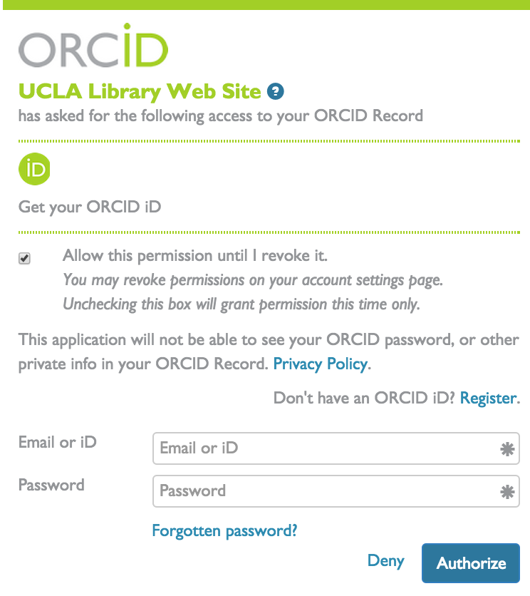
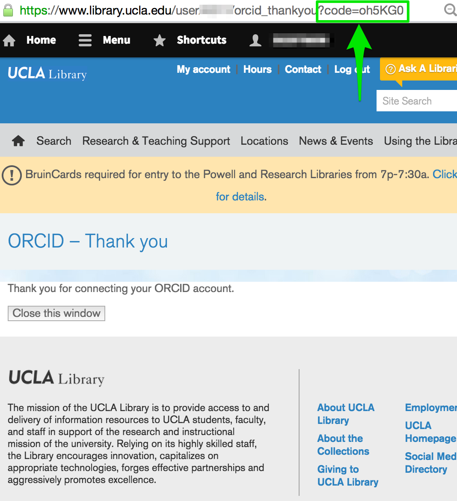
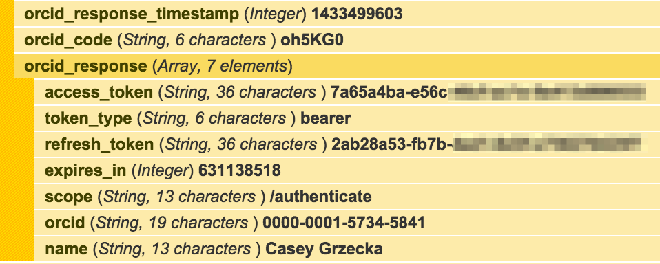
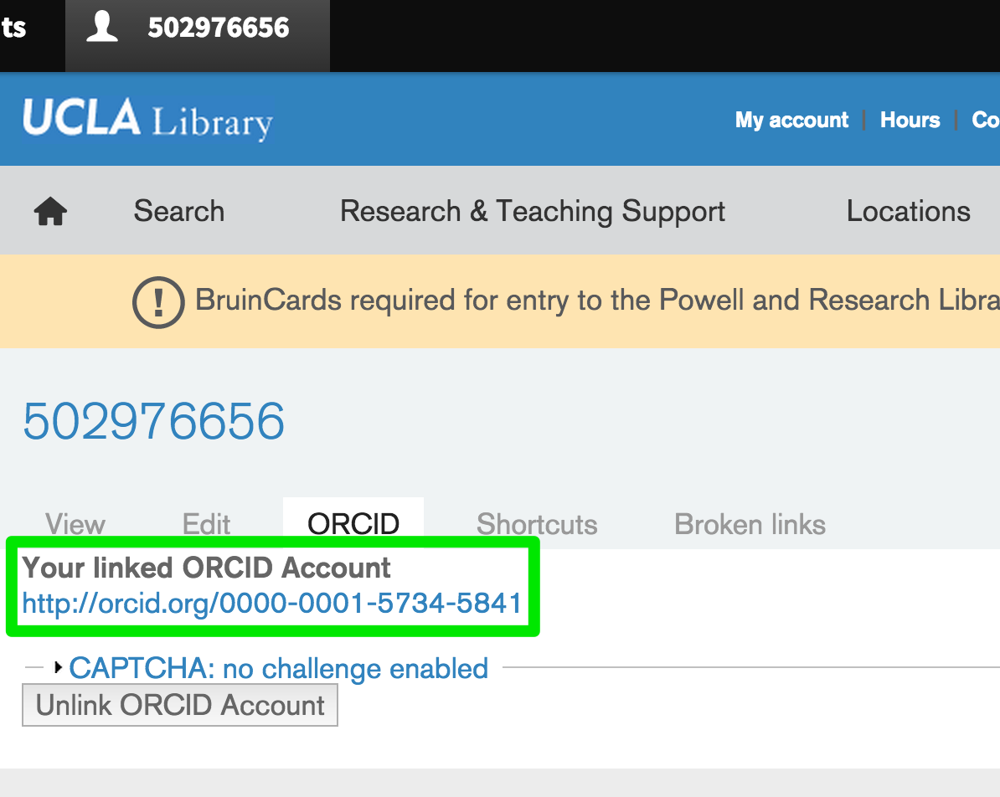

Integration
for Drupal
Created by Casey Grzecka
Drupal plays nice with others
- Like libraries
- Like APIs
We've all heard this.
But How?
Enter OAuth
The ORCID API uses OAuth 2.0
3-legged OAuth Authorization
3-legged OAuth Authorization is Easy!
Just Google it!
Leg 1: It's not that bad
–––> Sign in to ORCID –––>
Authorized!
Leg 2: Thank You
ORCID uses a redirect paramater to send the user back to you site. This request comes with a code.
Leg 3: Get Stuff
We can use this code to make an API call that gets a response with useful information:
dpm($user->data);

How does it work?
Custom module: orcid_integration
- orcid_integration_provision
- orcid_oauth
- wsclient
- wsclient_rest + http_client
submodules:
dependencies:
Config
typical form stuff:
/**
* @file
* ORCID administrative functions, forms.
*/
function orcid_integration_services_configuration($form, &$form_state) {
global $base_url;
$form['orcid_integration_main_url'] = array(
'#title' => t('ORCID Main URL'),
'#type' => 'textfield',
'#description' => t('Please enter the main orcid url, such as http://orcid.org/ or http://sandbox.orcid.org/'),
'#required' => TRUE,
'#default_value' => variable_get('orcid_integration_main_url', 'http://sandbox.orcid.org/'),
);
$form['orcid_integration_public_api_url'] = array(
'#title' => t('ORCID API URL'),
'#type' => 'textfield',
'#description' => t('Please enter the public orcid api url as per !link. If a members api search is not possible, we will use the public query api instead.', array('!link' => 'http://support.orcid.org/knowledgebase/articles/116874-orcid-api-guide')),
'#required' => TRUE,
'#default_value' => variable_get('orcid_integration_public_api_url', 'http://api.sandbox.orcid.org/'),
);
$form['oauth'] = array(
'#type' => 'fieldset',
'#title' => 'OAUTH Credentials',
'#description' => 'If OAUTH credentials are provided, this will allow for actions beyond basic search.',
'#collapsed' => FALSE,
'#collapsible' => FALSE,
);
...
Construct WSCLIENTService Object
/*
* Implements hook_default_wsclient_service().
*/
function orcid_oauth_default_wsclient_service() {
// construct ORCID service
$service = new WSClientServiceDescription();
$service->name = 'orcid_oauth_service';
$service->label = 'ORCID Service';
$service->url = variable_get('orcid_integration_public_api_url', 'https://pub.sandbox.orcid.org/') . 'oauth/token';
$service->type = 'rest';
// construct operations
$operation['parameter']['client_id'] = array('type' => 'text', 'default_value' => '');
$operation['parameter']['client_secret'] = array('type' => 'text', 'default_value' => '');
$operation['parameter']['grant_type'] = array('type' => 'text', 'default_value' => 'authorization_code');
$operation['parameter']['code'] = array('type' => 'text', 'default_value' => '');
$operation['type'] = 'POST';
// add operations to service
$service->operations['getOrcidId'] = $operation;
$service->settings['curl options'] = array('Accept: application/json');
// add service to services array
$services[$service->name] = $service;
// clear $operation array for possible later use
$operation = array();
return $services;
}
Leg 2: Get Code
(skipped LEG 1 —because it's boring!)
/*
* Returns a close button for the connect to ORCID's popup window
* and saves the orcid code to the user's orcid code field.
*/
function orcid_oauth_thankyou() {
// get ?code=xxxxxx param
$qparams = drupal_get_query_parameters();
// load user account from redirection
$vars['account'] = user_load(arg(1));
// assign code to data array
$edit = array(
'data' => array(
'orcid_code' => $qparams['code'],
),
);
// save code to user['data'] via $edit param
user_save($vars['account'], $edit);
return theme('orcid_oauth_thankyou', $vars);
}
Leg 3: Use Code
function orcid_oauth_get_orcid_id($vars) {
$service = wsclient_service_load('orcid_oauth_service');
$client_secret = variable_get('orcid_integration_api_client_secret');
try {
// call ORCID service with params to override defaults
$response = $service->getOrcidId(
$vars['orcid']['client_id'],
$client_secret,
'authorization_code',
$vars['account']->data['orcid_code']
);
$vars['account']->field_orcid_id[LANGUAGE_NONE][0]['value'] = $response['orcid'];
// save orcid response to user data array
user_save($vars['account'], array(
'data' => array(
'orcid_response' => $response,
'orcid_response_timestamp' => time(),
// TODO: use this in calls later to see if we have to get a new access_token
)
));
}
catch (WSClientException $exception) {
return false;
}
return $response;
}
Account Linked to orcid
THANK YOU
github.com/UCLALibrary/orcid_integration drupal.org/project/orcid_integration ^^ futuregh: z3cka
@z3cka